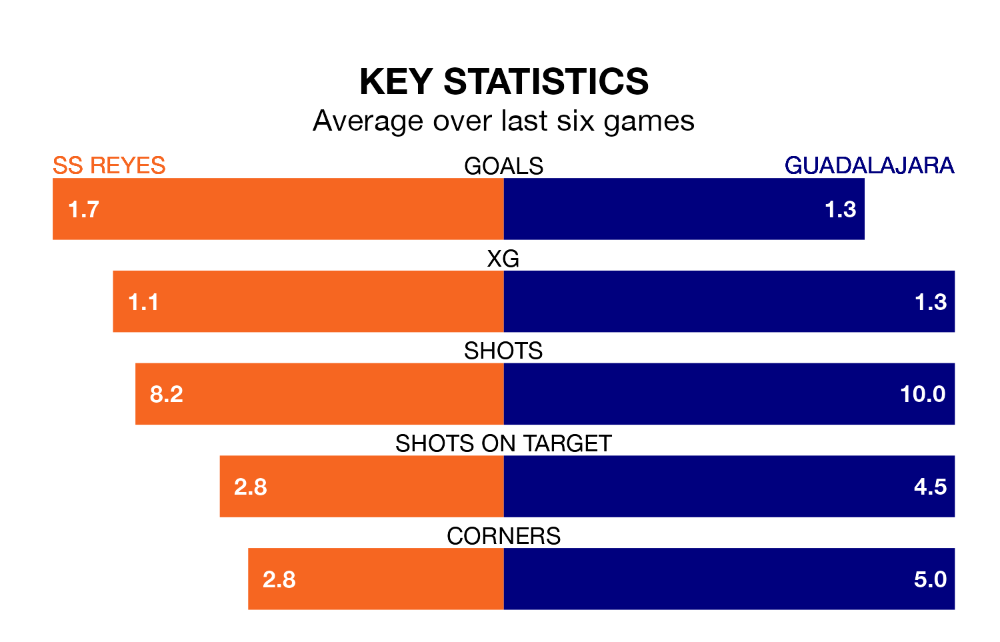

Sunday's early match between SS Reyes and Guadalajara promises to be one for the neutrals, as two of Segunda División RFEF Group 5's most free-scoring sides go head-to-head.
Ahead of the game, SS Reyes and Guadalajara sit third and second in the goal-scoring charts, with 24 and 25 goals respectively.
SS Reyes are third in the table after 17 games, of which they have won seven and drawn seven, earning 28 points.
Guadalajara are nine places behind the home side in 12th, with seven wins and two draws putting them on 23 points.
SS Reyes are in reasonable form in Segunda División RFEF Group 5, with three wins and two draws from their last six games.
With three wins and three losses over that period, the visitors' form is slightly worse – they have taken nine points from 18, compared to SS Reyes's 11.
SS Reyes's last match was on January 7, a 4-0 win against AD Unión Adarve.
Guadalajara lost 4-1 against CD Mensajero last time out, also on Sunday.
Updated: 15:34, 08/01/24